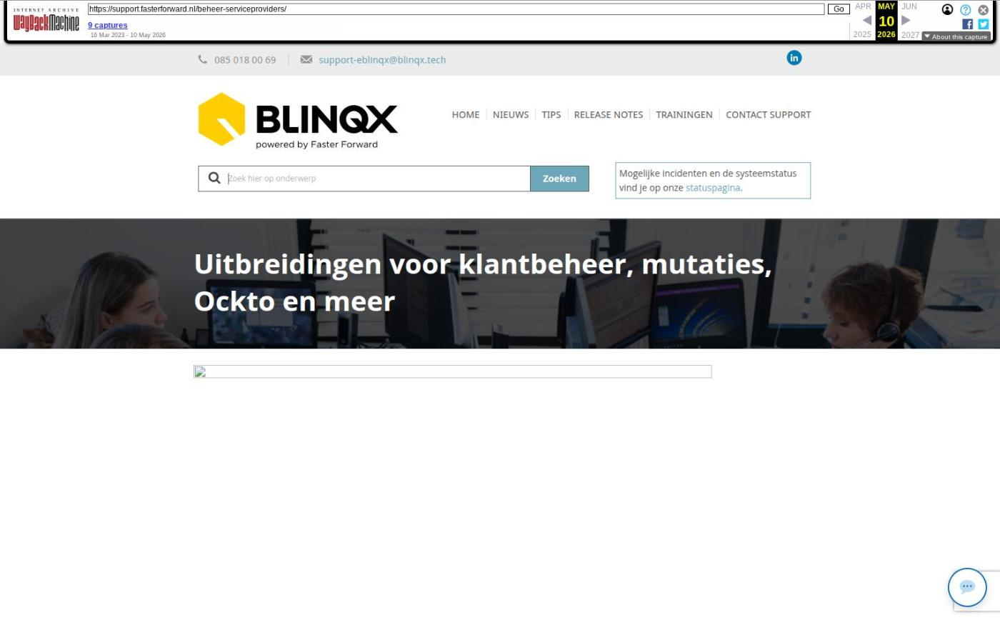

Uitbreidingen voor klantbeheer, mutaties, Ockto en meer

Tekstinhoud
Op dinsdag 21 maart wordt Elements weer verbeterd en uitgebreid met nieuwe features! Deze release bevat uitbreidingen en optimalisaties voor advieskantoren en serviceproviders.
Binnenkort wordt de kalender in Elements vernieuwd én worden Veilig Ophalen en Ockto geïntegreerd met uwkluis en Elements. We zijn hier druk mee bezig en houden je op de hoogte!
Advieskantoren
3 nieuwe selecties voor klantbeheer
Documenten verplaatsen naar andere stukkenlijsten
Inkomstenbelasting op te halen via Ockto
Klantreis Ockto app verbeterd
Mutatievoorstellen
Inzicht in reden conflict
Nieuwe polis op startpagina
Duidelijk dat mutatie is verwerkt in Elements
Rappeltaak bij royeren
Tags verbeterd
Alle mutaties in behandeling af te vinken in Aplaza bericht
Mutaties te verwerken in tabblad mutatievoorstellen
Ontvangen mutaties via ADN verduidelijkt
Filteren op mutaties in behandeling
Informatie verzekeringen uitgebreid
Nul posten zichtbaar in controlelijst
Serviceproviders
Serviceproviders communiceren vanuit juiste formule
Serviceproviders kunnen stukken opvragen bij advieskantoren
Stukken te beoordelen door serviceproviders
Advieskantoren
3 nieuwe selecties voor klantbeheer
Om meer kansen te halen uit je bestaande portefeuille, zijn er nu 3 nieuwe SMART selecties. Benader deze klanten bijvoorbeeld om te vragen of hun producten nog actueel zijn of om aanvullende diensten te aan te bieden.
Klanten met één product
Klantcontact lang geleden
Casco mogelijk aanpassen
Tijdens ons webinar over klantbeheer op 5 april leggen we uit hoe deze selecties werken.
Documenten verplaatsen naar andere stukkenlijsten
Serviceproviders en advieskantoren hoeven niet meer meerdere keren hetzelfde stuk te uploaden. Stukken kunnen eenvoudig handmatig worden gekopieerd of verplaatst naar een andere stukkenlijst. Zo verplaats je bijvoorbeeld eenvoudig stukken van een NN hypotheek naar een Allianz verzekering. Daarnaast kun je ook één document onder meerdere stukken toevoegen. Lees er hier meer over.
Inkomstenbelasting op te halen via Ockto
Jouw klanten kunnen vanaf nu ook hun inkomstenbelasting aanleveren met Ockto. De data uit deze bron wordt vervolgens ingevuld in het adviespakket. Zoals bij alle bronnen worden ook deze gegevens automatisch ingevuld in het adviespakket.
Klantreis Ockto app verbeterd
Als jouw klanten de Ockto app gebruiken, wordt hun proces niet meer onderbroken als ze de Ockto app nog niet hebben geïnstalleerd. Hierdoor hoeft de klant niet opnieuw naar de Digimap om de QR code te scannen.
Mutatievoorstellen
Voor kantoren die al werken met mutatievoorstellen, zijn er nieuwe features beschikbaar.
Wil jij ook starten met deze nieuwe features? Stuur dan een e-mail naar support@fasterforward.nl en vermeld hierin dat je wilt starten met mutatievoorstellen. Wij nemen dan contact op om de inrichting met je af te stemmen.
Inzicht in reden conflict
Bij conflicten wordt nu tekstueel toegelicht waarom dit conflict wordt weergeven. Zo lees je bijvoorbeeld dat je een conflict krijgt omdat de maatschappij iets anders heeft aangeleverd dan dat jij hebt ingevoerd in Elements.
Nieuwe polis op startpagina
Op de startpagina van een klantdossier zie je nu duidelijk dat er een nieuwe polis is die in de toekomst ingaat.
Duidelijk dat mutatie is verwerkt in Elements
In het tabblad 'mutatievoorstellen' zie je nu aan 'Verwerkt in Elements' duidelijk dat de mutatie is verwerkt in Elements.
Rappeltaak bij royeren
Je kunt nu ook een rappeltaak aan laten maken bij het royeren van een pakket of polis.
Tags verbeterd
Bij de tags offertedeel->mutatievoorstel->omschrijving en offertedeel->mutatievoorstel->uitgebreide omschrijving wordt het eigen risico niet meer getoond. Daarnaast wordt de dekking omschrijving alleen getoond als deze is ingevuld.
Maatschappij controlerend
De volgende verbeteringen zijn alleen van toepassing als je de maatschappij controleert. Lees hier meer daarover.
Alle mutaties in behandeling af te vinken in Aplaza bericht
Je ziet nu bij alle Aplaza berichten wanneer polissen nog openstaande mutatievoorstellen hebben. Deze werden voorheen nog niet bij alle Aplaza berichten weergegeven.
Daarnaast kun je bij alle Aplaza berichten gelijk afvinken dat je de mutatie hebt ontvangen van de maatschappij. Hierdoor hoef je dit niet meer bij de polis in het klantdossier te doen.
Mutaties te verwerken in tabblad mutatievoorstellen
Als je mutaties van de maatschappij controleert, kun je nu ook in het tabblad 'mutatievoorstellen' in een klantdossier de financiële en ADN verwerking van een mutatie afvinken door op de zandloper te klikken. Dat kon voorheen alleen in de polis en bij Aplaza en ADN.
Ontvangen mutaties via ADN verduidelijkt
Als je mutaties van de maatschappij controleert, zie je nu duidelijk of je de mutatie al hebt ontvangen via ADN. 'Financieel' is namelijk hernoemd naar 'Ontvangen via ADN'. Daarnaast is 'Bevestigd' hernoemd naar 'Gecontroleerd door kantoor'.
Filteren op mutaties in behandeling
Je kunt nu filteren op mutaties in behandeling in het tabblad 'Mutatievoorstellen'.
Meldingen Aplaza berichten verduidelijkt
Als je mutatievoorstellen gebruikt, worden Aplaza berichten gematcht aan de hand van het polisnummer (rechts in de productkaart). Voorheen werden deze gematcht aan het pakketnummer (links in de productkaart).
Hierdoor wordt duidelijker weergegeven bij welke polis het Aplaza bericht hoort. Hierdoor weet je voor welke polis er een mutatie en/of conflict is.
Daarnaast hebben we voor Aplaza berichten de volgende zaken verduidelijkt:
Als een pakket slechts één polis bevat, staat er 'voor deze polis' in de melding.
Als een bericht geen polis bevat, wordt hier ook niet naar verwezen.
Informatie verzekeringen uitgebreid
Onderstaande velden zijn toegevoegd bij verzekeringen in Elements. Je kan meer detail informatie vastleggen voor deze typen verzekerignen. Deze velden worden in Elements gevuld als de maatschappij deze via ADN naar jouw kantoor stuurt. Daarnaast kun je deze velden handmatig invullen en kan de informatie worden opgehaald via de Elements API.
Branche Toegevoegde velden
090 Rechtsbijstand
092 Particuliere rechtsbijstand Franchise verzekerd bedrag, Franchise verzekerd bedrag, Eigen woning meeverzekerd, Dekkingsgebied, Dekkingsgebied toelichting
022 Caravan Dekkingsgebied, Hagelbestendig dak, Inboedel meeverzekerd, Inboedel verzekerd bedrag, Gebruikt als stacaravan, Aanbouw meeverzekerd, Aanbouw verzekerd bedrag, Mover meeverzekerd, Mover verzekerd bedrag,
011 Ongevallen Gezinssamenstelling, Beroepswerkzaamheden meeverzekeren, Beroepswerkzaamheden meeverzekeren partner, Beroepswerkzaamheden meeverzekeren kinderen
601 Reis Maximale reisduur in dagen, Gezinssamenstelling
Nul posten zichtbaar in controlelijst
Nul posten zijn nu standaard zichtbaar in de ADN controlelijst.
Serviceproviders
We zijn druk bezig om Elements te verbeteren voor serviceproviders. Onderstaande verbeteringen zijn alleen beschikbaar voor organisaties waarbij Elements ook is ingericht als een serviceprovider-omgeving.
Serviceproviders communiceren vanuit juiste formule
Serviceproviders kunnen nu hun verschillende formules vastleggen. Zo kun je per aangesloten organisatie (advieskantoor) de huisstijl kleuren en logo's per formule instellen. Hierdoor stel je eenvoudig de juiste communicatie in door standaardteksten in huisstijl en tags te gebruiken. Daarnaast kun je de formule-gegevens gebruiken om workflows in te richten.
Serviceproviders kunnen stukken opvragen bij advieskantoren
Serviceproviders vragen nu eenvoudig stukken op bij advieskantoren. Serviceproviders kunnen namelijk stukkenlijsten aanmaken en deze naar het advieskantoor sturen. Het advieskantoor uploadt vervolgens de stukken die via HDN naar de serviceprovider worden verzonden (DA – documentbericht via HDN). De serviceprovider kan zo de stukken al controleren voordat deze naar de geldverstrekker worden verstuurd.
Stukken te beoordelen door serviceproviders
Serviceproviders kunnen stukken beoordelen. Na beoordeling van het stuk wordt deze beoordeling vastgelegd in de kolom 'Beoordeling serviceprovider'. Deze beoordeling gaat mee naar het advieskantoor zodra er een DA-bericht wordt verstuurd.
Geplaatst op 16 maart 2023 (Laatste update: 21 maart 2023)
Laatste 5 releasenotes
Nog meer data en documenten vergelijken »
Gemakkelijk data en documenten vergelijken »
Verbeteringen boekhouding en facturatie »
Verbeteringen gespreksopname en onder de motorkap »
Verbeteringen onder de motorkap en gespreksopnames »